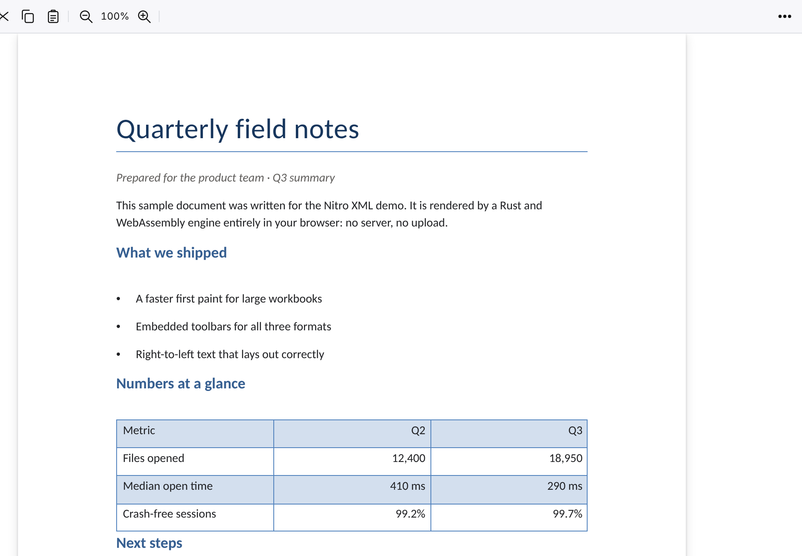
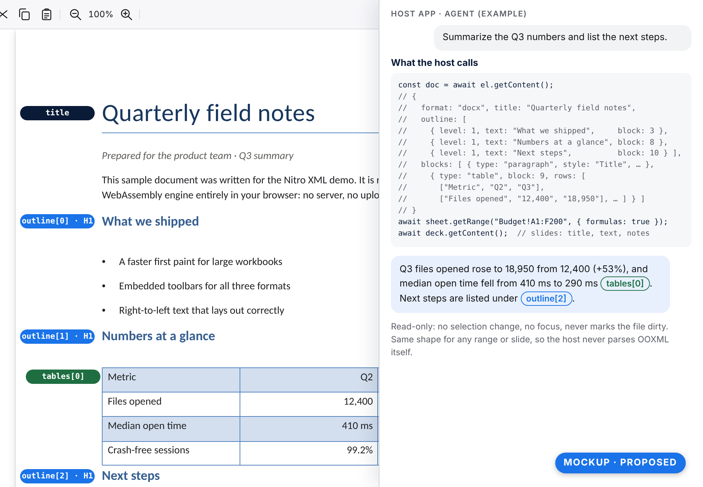
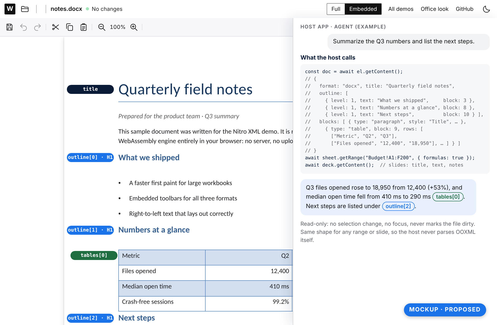

Let host apps read the document as data: outline, paragraphs, tables, any cell range, slide text
Approve: tap 👍 on the issue · Decline: tap 👎
Close-up of the change




Full screen

Today (embedded Word document): the only read API is getSelection(), which in Word returns the caret only, and in Excel only the user's current selection (max 10,000 cells, values without formulas). To answer "summarize this", a host has to unzip and parse the OOXML itself.


Mockup: the host's agent calls el.getContent() and gets the title, a heading outline and typed blocks (paragraphs with style, tables as rows) that match what is on screen; badges show which block each part came from. getRange() reads any sheet range with formulas; PowerPoint returns slide titles, text and notes.
Tap an image to open it full size.
Why
Hosts that put Nitro next to an AI agent need the document's content, not just its pixels: to summarize, answer questions, cite (with #620 highlights) or index it. Nitro has already parsed the whole model in its worker, so returning it as plain JSON is cheap, and it saves every host from shipping a second OOXML parser that can disagree with what the user sees. OnlyOffice and Collabora expose similar document-builder and UNO reads; Office.js has body.getText, tables and range.values.
Definition of done
- <nitro-docx>.getContent() returns { schema: 1, format, title, outline[], blocks[] } with paragraphs (text, style, list level), tables (rows of cell text) and images (alt text); outline entries point at block ids.
- <nitro-xlsx>.getRange('Sheet!A1:F200', { formulas, formats }) returns values, formulas and number formats for any range on any sheet (not only the selection); getContent() lists sheets with used ranges; large reads are chunked with a truncated flag.
- <nitro-pptx>.getContent() returns slides with title, shape text in reading order (shape ids) and speaker notes.
- Reads never change selection, focus, scroll position or dirty state; ids line up with getSelection, setPosition and setHighlights (#620); React exposes the same methods on the handle.
- TypeScript types and a README section with an agent example; contract tests on python-docx / openpyxl / python-pptx fixtures; bundle-budget and all required checks green.
Approve: tap 👍 on the issue · Decline: tap 👎